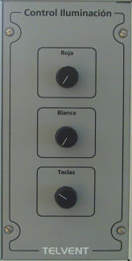

Control de Iluminación
El módulo de Control de Iluminación de la Mesa de Cartas permite al operador regular la intensidad de la luz roja o blanca de la zona de trabajo, y regular la intensidad de los pilotos e indicadores del Panel de Navegación.

Contiene los siguientes elementos:
- Selector de Intensidad de Luz Roja: selector giratorio que permite regular la intensidad de luz roja de la zona de trabajo de la Mesa de Cartas.
- Selector de Intensidad de Luz Blanca: selector giratorio que permite regular la intensidad de luz blanca de la zona de trabajo de la Mesa de Cartas.
- Selector de Intensidad de Luz Teclas: selector giratorio que permite regular la intensidad de luz de los pilotos e indicadores del Panel de Navegación.